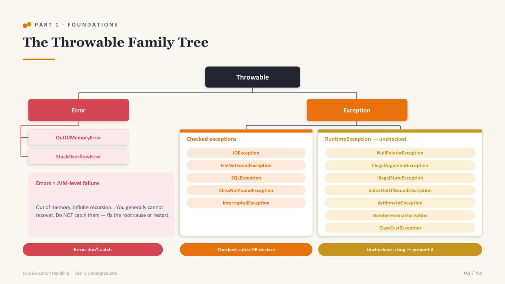
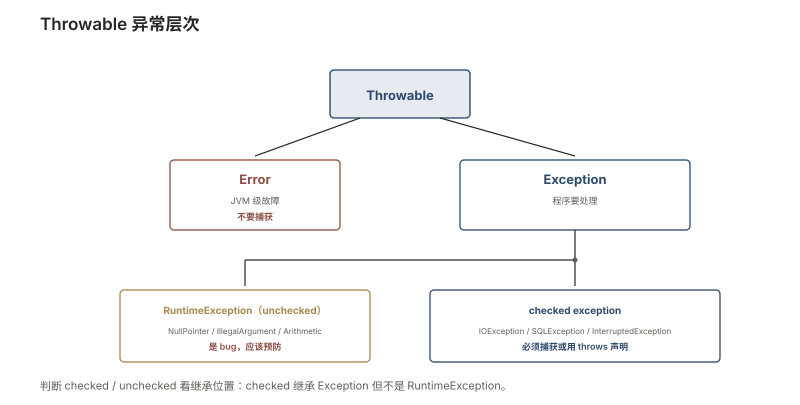
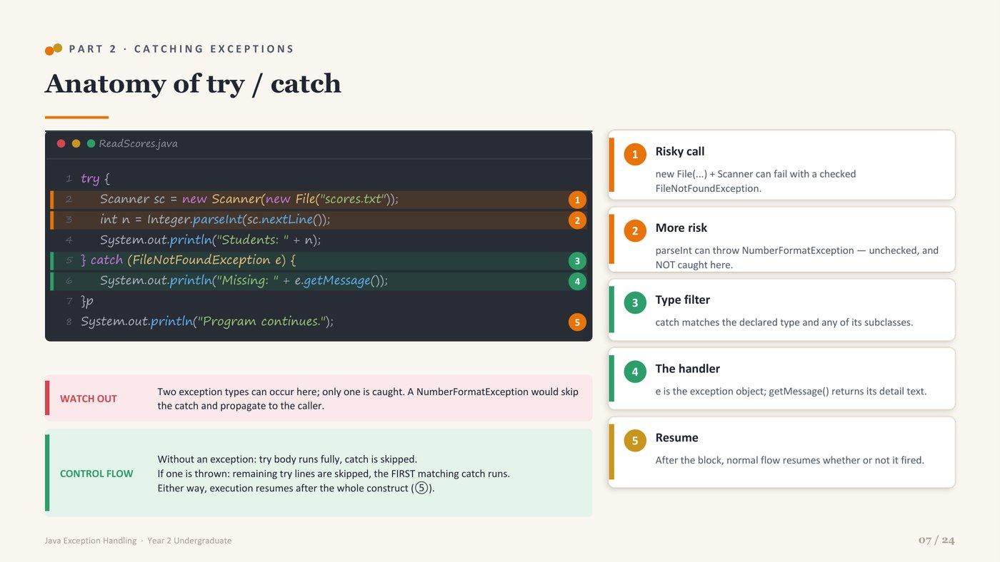

SOE102 · 第 7 章
异常处理
Java Exception Handling
虚线下划线为术语；悬停查看中文、英文与释义，完整词典见“术语”。
本章目录
本讲围绕“程序出错时会发生什么”展开：异常是对象，沿调用栈向上传递，被匹配的 catch 接住；据此区分 checked 与 unchecked，学会 try/catch/finally、try-with-resources、throw 与 throws，并设计自己的异常。
本章要点
- 异常是表示异常情况、打断正常指令流的对象，带有类型、消息与来源位置。
- Throwable 分两支：Error 是 JVM 级故障，不应捕获；Exception 才是程序要处理的。
- checked 异常继承 Exception，编译器强制 catch 或用 throws 声明；unchecked 继承 RuntimeException，属于程序缺陷。
- 一个异常最多被一个 catch 捕获，即第一个类型匹配的块；catch 要从具体到一般排列。
- finally 在正常与异常两条路径上都会执行，即使 try 或 catch 里有 return。
- try-with-resources 自动关闭实现 AutoCloseable 的资源，多个资源按声明逆序关闭。
- throw 是语句，抛出一个异常对象；throws 是方法签名的一部分，声明可能抛出的类型。
- 跨层转换异常时必须把原异常作为 cause 传入，否则现场证据丢失。
7.1 一次崩溃：异常是什么
讲义从一段会崩的程序开始：String raw = "ten"; 之后调用 Integer.parseInt(raw)。parseInt 发现 "ten" 不是整数，就创建并抛出一个 NumberFormatException 对象；第 5 行的打印语句立刻不再执行；由于没有任何处理器接住它，JVM 的默认处理器接手，打印栈轨迹并终止这个线程。
public class CrashDemo {
public static void main(String[] args) {
String raw = "ten";
int bonus = Integer.parseInt(raw);
System.out.println(bonus); // 永远不会执行
}
}控制台输出是 Exception in thread "main" java.lang.NumberFormatException: For input string: "ten"，下面跟着若干 at ... 行。讲义把一行轨迹拆成四段来读：异常类型、冒号后的消息、源码位置、调用链。
严格定义是：异常exception是一个对象，表示某种异常情况，并打断正常的指令流。围绕它有四个动作：throw 在出错点创建并抛出对象；catch 找到类型匹配的处理器并运行；propagate 表示本地没有匹配的处理器时把对象交给调用者，沿调用栈向上；stack trace 记录导致失败的调用链。讲义的比喻是：一个投递不了的包裹沿链条往上传，直到有人接收，或者被退回总站。
W9 slide 3–4
7.2 Throwable 家族树
所有能被抛出的东西都继承自 Throwable。它下面分两支：Error 与 Exception。
- Error 是 JVM 级故障，例如 OutOfMemoryError、StackOverflowError（内存耗尽、无限递归）。讲义的态度很明确：一般无法恢复，不要捕获，要么修根因，要么重启。
- Exception 下的 checked exception 包括 IOException、FileNotFoundException、SQLException、ClassNotFoundException、InterruptedException——必须捕获或声明。
- Exception 下的 RuntimeException 是 unchecked：NullPointerException、IllegalArgumentException、IllegalStateException、IndexOutOfBoundsException、ArithmeticException、NumberFormatException、ClassCastException。
讲义给这三类各配了一句判词：Error —— 不要捕获；checked —— 捕获或者声明；unchecked —— 是 bug，应该预防。


绘图提示词
Clean vector UML-style hierarchy tree: root box labelled Throwable, two child branches labelled Error and Exception; Error branch holds OutOfMemoryError and StackOverflowError; Exception branch splits into a checked group holding IOException, FileNotFoundException, SQLException, ClassNotFoundException, InterruptedException and an unchecked group holding RuntimeException with NullPointerException, IllegalArgumentException, IllegalStateException, IndexOutOfBoundsException, ArithmeticException, NumberFormatException, ClassCastException. Three small colour-coded tags read do not catch, catch or declare, and fix the code. Flat 2D, thin 1.5 px strokes, muted slate blue, warm grey and one muted amber accent, white background, English labels, no cartoon, no gradient, no shadow.
W9 slide 5
7.3 checked 与 unchecked：编译器要求什么
| 维度 | checked | unchecked |
|---|---|---|
| 类型层次 | 继承 Exception，但不是 RuntimeException | 继承 RuntimeException（或 Error） |
| 编译器态度 | 不处理就拒绝编译：捕获或用 throws 声明 | 无编译期要求，仍可捕获处理 |
| 信号含义 | 可预期的、可恢复的外部失败：文件缺失、网络中断、SQL 错误 | 程序缺陷：空引用、非法参数、错误下标 |
| 典型例子 | IOException、SQLException、InterruptedException | NullPointerException、IllegalArgumentException、ArithmeticException |
| 应对方式 | 在能恢复的边界处规划处理 | 改代码：前置条件、校验、测试 |
讲义给了一个记忆口诀：checked 是“编译器会检查你有没有做点什么”，unchecked 是“什么都不检查，因为正确的修法是改代码”。这句话几乎能解释所有“为什么这个异常必须 try”与“为什么那个异常没人 try”的疑问。
理解这一点后，catch 的位置就有讲究了：checked 异常应该在“确实能恢复”的层处理——能重试、能换文件、能提示用户；unchecked 异常应该回到源头修 bug，而不是用一个 catch 把它盖住。
W9 slide 6
7.4 try/catch 的结构与控制流
try {
Scanner sc = new Scanner(new File("scores.txt"));
int n = Integer.parseInt(sc.nextLine());
System.out.println("Students: " + n);
} catch (FileNotFoundException e) {
System.out.println("Missing: " + e.getMessage());
}
System.out.println("Program continues.");try 块里放有风险的调用：new File(...) 与 Scanner 可能抛出 checked 的 FileNotFoundException；parseInt 可能抛出 unchecked 的 NumberFormatException，而这里并没有捕获它。catch 后面的括号声明它能接住的类型，包括该类型的子类；e 是异常对象，getMessage() 返回它的详细文本。
控制流只有两种走法。没有异常时，try 体全部执行，catch 被跳过。有异常时，try 中剩余的语句被跳过，第一个类型匹配的 catch 执行，然后整个结构之后的语句继续执行（这里是打印 Program continues.）。如果抛出的类型没有匹配的 catch，异常就向上传给调用者。
所以上面这段程序其实有两个风险点，只接住了一个：文件缺失会走 catch 并继续；文本不是整数则跳过 catch、直接向上抛，程序仍会崩。讲义把这一点标成 WATCH OUT，提醒读代码时要数清“可能抛几种、接住了几种”。

W9 slide 7–8
7.5 多个 catch 与 multi-catch
一个 try 后面可以跟多个 catch。规则只有一条：从最具体到最一般排列，因为一个异常最多只有一个 catch 执行，就是第一个类型匹配的。讲义的例子顺序是 FileNotFoundException → NumberFormatException → RuntimeException，最后一个作为兜底。
// 错误顺序：不能编译
} catch (RuntimeException e) {
...
} catch (IllegalArgumentException e) {
...
}
// error: exception IllegalArgumentException has already been caught把父类放在前面，子类的 catch 就永远不可达，编译器直接报 “has already been caught”。这条规则同样适用于 catch 里写 Exception 的情况：它一旦出现在前面，后面所有 catch 都失去意义。
Java 7 起支持 multi-catch，用一个块处理多种类型，类型之间用竖线分隔：
try {
return loadConfig(name);
} catch (FileNotFoundException
| InvalidPropertiesFormatException e) {
log.warn("bad config: " + e.getMessage());
return DEFAULT;
}三条限制要记住：e 隐式为 final，块内不能给它重新赋值；备选类型之间不能有子类/父类关系，否则编译器判定为不可达；multi-catch 整体只是 catch 链中的一个块，所以它与别的 catch 之间仍要遵守“具体在前”的顺序。
什么时候用？当几种不同的失败需要同一种恢复动作（记录日志并返回默认值）时用它；需要不同处理就老老实实分开写。讲义也提醒：课程作业里单个 catch 更常见，multi-catch 多出现在整理大型代码库的处理器时。
W9 slide 9–10
7.6 finally：一定执行的清理块
finally 块无论走哪条路径都会执行：try 正常结束时紧接着执行；异常被 catch 接住时在 catch 之后执行；异常没有被接住时在向上传播之前执行。讲义把它标为 KEY IDEA——两条路径都跑。
public static int firstScore(String path) {
Scanner sc = null;
try {
sc = new Scanner(new File(path));
return sc.nextInt(); // 返回值已确定
} catch (FileNotFoundException e) {
return -1; // 连这个 return 也要让路
} finally {
if (sc != null) sc.close(); // 先执行这里
}
}经典陷阱是：try 或 catch 里写了 return，finally 仍会先执行，然后方法才真正返回。更糟的是在 finally 里写 return——它会丢弃尚未返回的值，并且吞掉正在抛出的异常。讲义的结论很硬：finally 只用来清理，绝不写 return。唯一能跳过 finally 的是 System.exit() 或 JVM 终止。
还有一道追踪题：label(5) 与 label(-1) 都返回 "finally"。正常路径上 r 依次被赋成 "try"、"ok"，最后被 finally 改成 "finally"；异常路径上 r 被赋成 "try"、"catch"，仍被 finally 覆盖。两条路径的终点相同，因为 finally 最后执行。
为什么要有它？Java 7 之前，finally 是关闭文件、套接字、数据库连接的唯一安全位置——资源必须在每条路径上被释放。今天它仍用于释放锁、回滚事务与记录日志。
W9 slide 11、13
7.7 try-with-resources：自动关闭
Java 7 引入 try-with-resources：把资源声明在 try 后面的圆括号里，代码块结束时自动调用它的 close()，即使块内抛出异常也一样。
public static String firstLine(String path) throws IOException {
try (BufferedReader br =
Files.newBufferedReader(Path.of(path))) {
return br.readLine();
}
// br.close() 自动调用，即使 readLine() 抛异常
}三条规则：括号里的资源必须实现 AutoCloseable；这些变量隐式为 final；关闭在所有路径上发生，多个资源按声明顺序的逆序关闭（后声明的先关）。多个资源之间用分号分隔：
try (var in = Files.newInputStream(p);
var out = Files.newOutputStream(q)) {
in.transferTo(out);
}Java 9 起还允许把已经声明好的 effectively-final 变量直接放进括号：try (br) { ... }。讲义的建议是：从 Java 7 起，文件、流、数据库连接一律优先用它。
它与 finally 的分工很清楚：try-with-resources 负责“关资源”，finally 负责“关不掉的东西”——锁、事务回滚、日志。
W9 slide 12
7.8 throw、throws、调用栈与栈轨迹
throw 与 throws 只差一个字母，作用完全不同。前者是语句，在运行期抛出一个异常对象；后者是方法签名的一部分，声明这个方法可能抛出哪些类型，交给调用者处理。
| 维度 | throw | throws |
|---|---|---|
| 本质 | 可执行语句，抛出异常对象 | 声明子句，说明可能抛出的类型 |
| 语法 | throw new XException("details"); | void m() throws IOException, SQLException |
| 编译效果 | 任何类型都能抛，常用于参数校验（unchecked） | 方法内未捕获的 checked 异常必须声明 |
| 心智模型 | “我现在就失败” | “调用者，请做好准备” |
异常如何在方法间传递？讲义用四层调用演示：main 调用 loadReport，loadReport 里有 catch (IOException)，它调用 readFile，readFile 调用 readLine，readLine 抛出 new IOException("disk full")。JVM 沿着调用栈逆序退出未完成的方法，寻找匹配的 catch；loadReport 接住了，main 根本不知道发生过失败；如果一路都没有匹配，异常抵达 main 的调用者，默认处理器打印轨迹并终止线程。设计原则是八个字：throw early, catch late——在源头尽早失败，在真正能恢复的层处理。
读栈轨迹有三步。第一行是答案：线程名之后是异常类型，冒号后是消息。中间的 at 行是栈帧，格式为 方法(文件:行号)，最上面一帧才是真正抛出的位置，越往下越是调用者。最后，跳过库的帧，找第一个出现你自己类名的那一帧——那里才是调试起点。讲义还提醒：printStackTrace() 只适合控制台，生产环境应通过 SLF4J、Log4j 这类框架带上下文记录。
W9 slide 14–16
7.9 标准异常、自定义异常与异常链
讲义列出了一批“一定会遇到”的标准异常。unchecked 一侧：NullPointerException（对 null 使用点号）、IllegalArgumentException（调用者传了非法值）、IllegalStateException（对象状态不适合这次调用）、IndexOutOfBoundsException（数组或列表下标越界）、ArithmeticException（如整数除以零）、NumberFormatException（parseInt / parseDouble 遇到坏文本）。checked 一侧：IOException（一般 I/O 失败，是父类）、FileNotFoundException（文件缺失或不可访问）、SQLException（数据库访问或查询失败）、ClassNotFoundException（类不在 classpath 上）。讲义的建议是“先复用再发明”：优先用最贴近的标准类型，只有当调用者需要把“你的失败”与这些标准失败区分开时，才自定义异常。
自定义异常的写法是继承一个父类并补三个构造器：
public class InsufficientFundsException extends RuntimeException {
public InsufficientFundsException() { super(); }
public InsufficientFundsException(String msg) { super(msg); }
public InsufficientFundsException(String msg, Throwable cause) {
super(msg, cause); // 用于异常链
}
}继承 RuntimeException 就是 unchecked，继承 Exception 就是 checked（调用者被迫处理）。类名以问题命名并以 Exception 结尾；至少要提供带消息的构造器；(String, Throwable) 形式为异常链准备。讲义给出自定义异常“值得存在”的三个条件：调用者能据此做出不同的恢复；它命名了一条领域规则（比如“透支”，而不只是 IllegalArgumentException）；它要跨库或模块边界传递。
异常链exception chaining是跨层转换时的必备动作：捕获 SQLException 后，把它作为 cause 传给新的领域异常，throw new DataAccessException("cannot load user " + id, e);。这样调用者只需处理 DataAccessException，不必依赖 JDBC；而 getCause() 能沿链回溯，打印出的轨迹里会出现 Caused by: java.sql.SQLException: connection closed。丢掉 cause 的“吞掉再抛”会让生产环境的 bug 几乎无法排查。
W9 slide 17–19
7.10 最佳实践与反模式
讲义把该做与不该做并列成两张清单。该做的六条：捕获可能发生的最具体类型；要么有意义地恢复，要么让它继续传播；每个可关闭资源都用 try-with-resources；校验参数并用清晰消息快速失败；throw early, catch late，在恢复层处理；包装异常时携带 cause。
要避免的六条：空的 catch（静默吞掉异常）；到处写 catch (Exception e) 甚至 Throwable；用 catch NPE 掩盖空指针 bug 而不去修它；把异常当普通控制流使用（代价高）；在 finally 里 return（覆盖结果与异常）；生产环境用 printStackTrace 或丢掉 cause。
最后的课堂练习是 averageScore(String path)：文件每行是 name,score，返回所有合法分数的平均值；空行与格式错误的行跳过并给控制台警告；文件不存在时抛出携带原始 cause 的 IllegalArgumentException；读取器必须在每条路径上关闭。参考解法的骨架是：外层 try-with-resources 打开 Scanner，内层 try 只包住单行的解析，catch (RuntimeException e) 跳过坏行，外层 catch (FileNotFoundException e) 转成 IllegalArgumentException 并传入 e。这样“关闭”由外层资源管理，“跳过坏行”由内层小范围 catch 负责，职责清晰。
讲义用三句话收尾：异常是对象，带有类型、消息与 cause，先读轨迹第一行再开调试器；throw early, catch late；资源需要保证，try-with-resources 与 finally 让清理在包括失败在内的每条路径上发生。
W9 slide 20–24